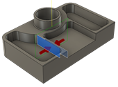

Z Surface
XY Circular Hole
In the canvas, select one of more faces on the model. The selected faces determine the available Probe Type options.
Note: To select faces on the stock, change the Probe Mode to Stock.
Examples of selected faces and Probe Type options:
|
|
Z Surface |
XY Circular Hole |
 |
 |
X Wall |
Y Channel |
 |
 |
XY Outer Corner |
Y Surface |